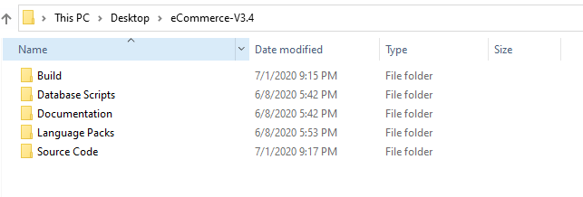
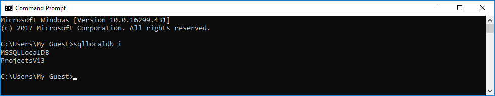

Setup
Setting up eCommerce MVC is very simple. After extracting files from zip files, you can open project solution file in Visual Studio. We recommend to use Visual Studio 2019 or any up to date versions.
You receive the following files after extracting project compressed file.

- Build: In this folder you get the build files which you can directly deploy to your server.
- Database Scripts: This folder contains the database related scripts.
- Documentation: As name suggest this contains the documentation files.
- Language Packs: This folder contains language packs for project to be installed.
- Source Code: You get the complete source code file in Visual Studio format in Source Code folder.
Database
eCommerce MVC uses Entity Framework Code first approach to create database. You don't need any SQL scripts to create database, its table and columns. You just need change the Connection String in Web.config according to to your database server instance. eCommerce MVC will automatically create database tables and seed initially required data with the help of entity framework. Follow below steps to get connection string information and setup your database on different enviroments.
Setting Database for Local Machine
When you are trying to setup eCommerce MVC in your local/development environemnt.
-
Open Command Prompt by pressing Win+R and then type
cmdin run window. Command Prompt will be opened. Get the name of SQL server instances by typingsqllocaldb iin your command prompt.
 - Open eCommerce MVC in Visual Studio.
-
Open web.config file from eCommerce MVC project and search for
eCommerceConnectionString_OKinconnectionStringstag.

- Change
MSSQLLocalDBwith your preferred server instance name. - Run the project in browser by pressing
Ctrl+F5. It'll take a moment when loading for the first time because Entity Framework is creating database and its entities and seeding the initial data in the background.
For Remote/Release
When you are trying to publish eCommerce MVC with remote database.
- Get the connection string for your remote database server. You can create a new empty database or choose an existing one.
- Open eCommerce MVC in Visual Studio.
-
Open web.config file from eCommerce MVC project and search for
eCommerceConnectionString_OKinconnectionStringstag.
- Change connection string value to your connection string from step 1.
- Publish eCommerce MVC to your server. We recommend to use Microsoft Azure or Amazon AWS but you can host it on any windows server.
- Open your published site in the browser. It'll take a moment when loading for the first time loading because Entity Framework is creating database and its entities and seeding the initial data in the background.
eCommerceConnectionString_OK. This is used to identify connection string in the eCommerceContext class.
Other Database Providers
The default database server configured for eCommerce MVC is Microsoft SQL Server. However if you intend to use any other database providers with eCommerce MVC, you can do so easily without making a lot of changes to database logics. This is because eCommerce MVC uses Entity Framework and Entity Framework supports a number of database providers. Below are the links for setting most common database providers with entity framework.
Default Roles and User
eCommerce MVC also seed default roles and user data with the help of Entity Framework when database is first created. It is defined in eCommerceDBInitializer.cs class which exists in eCommerce.Data project.
- Administrator
- Moderator
- User
eCommerce MVC also has a default Adminstrator user with the following credentials.
- Email:
admin@email.com - Username:
admin - Password:
admin123
For website level configurations e.g. Application Name, Currency Symbol, Payment Methods etc check configurations.